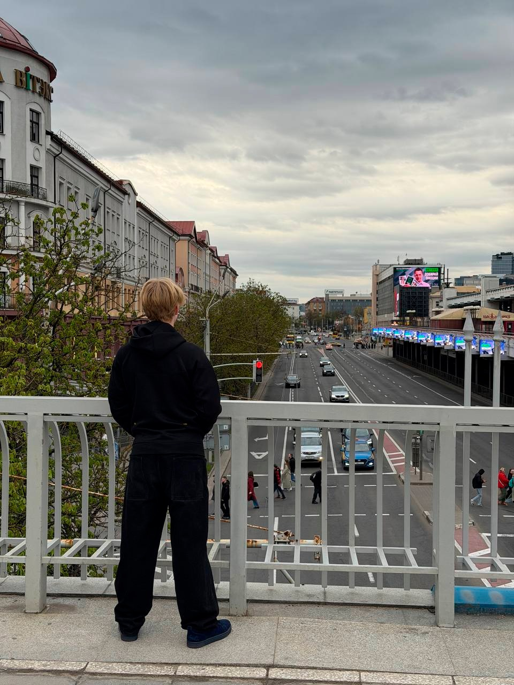
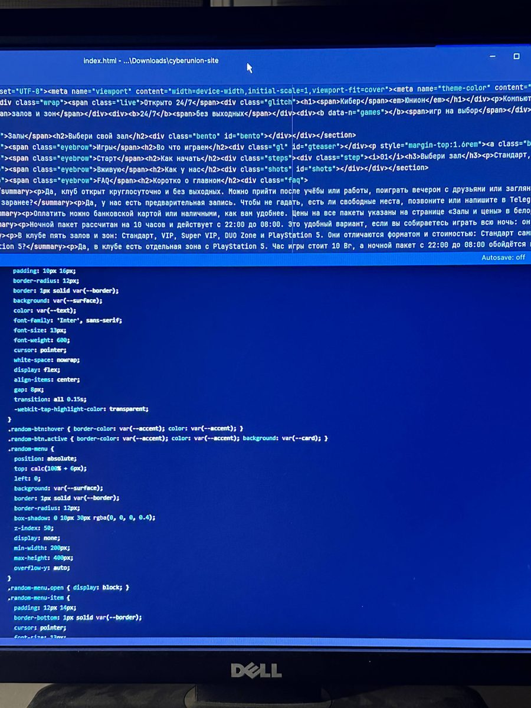

Сайты, которые понятны вашим клиентам
Меня зовут Алексей. Я делаю сайты для заведений и бизнеса: меню и цены, контакты, карта, фото. Всё удобно открывается на телефоне и компьютере, а код написан аккуратно, чтобы сайт можно было развивать дальше.

Что я делаю
Сайты для заведений и бизнеса
Сайт-визитка или многостраничный сайт: меню или услуги, цены, контакты, карта, галерея. Быстро открывается на телефоне.
Интерактивные страницы
Карты, фильтры, переключение языков и тем, таблицы с данными: всё, где посетитель что-то делает, а не только читает.
Telegram-боты
Боты на Python: приём заявок, уведомления, запись. Подбираю решение под вашу задачу.
Работы, которые можно открыть
Каждый проект работает онлайн: можно зайти с телефона и посмотреть самому.
Как мы будем работать
Знакомство
Вы рассказываете, что нужно и для чего. Я задаю уточняющие вопросы простым языком.
Договорённости
Называю стоимость и сроки до начала работы. Фиксируем, что входит в результат.
Работа
Показываю промежуточный результат, чтобы вы могли поправить направление.
Запуск
Публикую сайт, объясняю, как им пользоваться, и остаюсь на связи по вопросам.

Учусь с 12 лет и продолжаю расти
Я начал с Python, потом освоил HTML и CSS, а с 2025 года изучаю JavaScript. Я не скрываю, что мой путь ещё идёт, поэтому честно говорю, что у меня получится хорошо, а что лучше доверить другому специалисту.
Расскажите о задаче
Напишите в двух-трёх предложениях, что нужно сделать. Отвечу, как это можно реализовать, и назову сроки и стоимость.
Написать мне